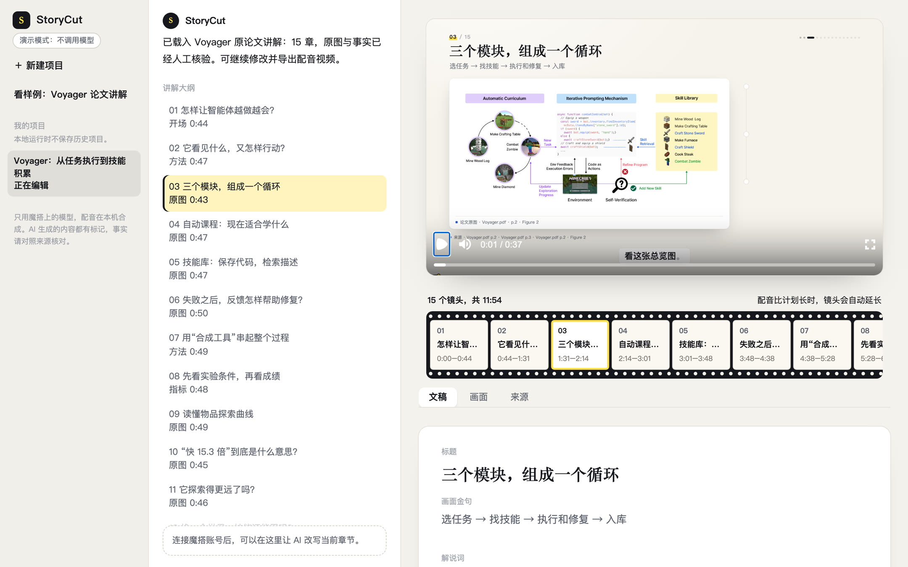

预览就是成片
右侧播放器和导出用的是同一套 Remotion 模板，改完旁白立刻能看到效果。
左边是项目，中间是讲解大纲和 AI 改写，右边是成片预览、镜头时间线和逐章编辑。
这是界面预览。生成新视频需要在本机运行 StoryCut 并连接魔搭模型。

选中第 3 章：右侧预览就是成片里的这一章，下方时间线高亮对应的镜头。
右侧播放器和导出用的是同一套 Remotion 模板，改完旁白立刻能看到效果。
在中间的对话框里让 AI 改写当前章节；锁定的章节不会被改动，导出时也只重渲改过的章节。
“来源”页列出每章引用的原文段落、图表和页码，数字都能对回论文。
在本机运行完整工作台：
python storycut_demo/run_local.py